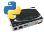

Business processing starts at the edge. Gateways aggregate and route collected sensor data. The Digi gateway is also the home of Remote-IQ. Remote-IQ refers to remote intelligence accomplished on a Digi device.
Digi’s gateway-embedded Python engine hosts the Digi Device Integration Application Framework (DIA), a Python foundation I/O library. DIA makes data collection easy and efficient. DIA provides channels for each I/O device (sensor). The developer simply selects a driver for the channel (Serial, Ethernet, ZigBee, etc.), presentation (protocol) and then initializes the DIAengine. User code then refers to the DIA channels for I/O. Easy. Efficient. Effective.